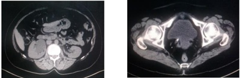
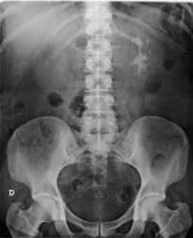
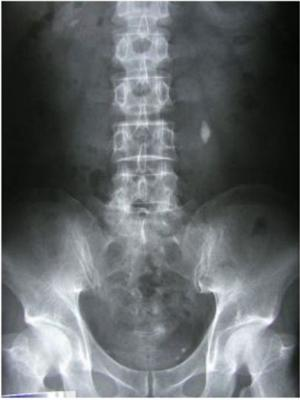
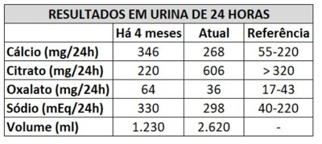

Questão 1 · Nef rologia · 4000184674Paciente de 21 anos, sexo feminino, é admitida em unidade de pronto atendimento de um hospital escola com queixa de dor em anco esquerdo irradiando para vulva, em uso de cipro oxacina por conta própria há 1 dia. Ao exame físico se encontra febril e com sinal de Giordano positivo a esquerda. Após analisar a ultrassonogra a abaixo, podemos a rmar que a melhor conduta é:

A Analgesia com tramadol e dipirona endovenosos
B Solicitar urologia para passagem de cateter duplo J
C Confirmar achado ultrassonográfico com tomografia
D Ceftriaxone em até 6 horas após coleta de culturas
Questão 2 · Nef rologia · ITU e litíase renal · 4000182841Assinale a assertiva correta sobre o manejo preventivo de litíase renal recorrente.
A A prevenção requer uso de medicação contínua, independentemente do tipo de cálculo.
B O consumo de fluidos deve ser suficiente para manter o débito urinário em 2 litros/dia.
C O consumo de cálcio deve ser inferior a 1.000 mg/dia, e o de sódio, superior a 100 mEq/dia.
D O consumo de frutas e vegetais deve ser evitado pelo risco de formação de cálculos de oxalato de cálcio.
Questão 3 · Cálculos de cálcio · 4000181767O componente mais comum dos cálculos urinários é o cálcio, que é constituinte principal de quase 80% das pedras. Oxalato de cálcio compõe cerca de 60% de todos os cálculos, oxalato de cálcio misto e hidroxiapatita 20% e os cálculos de brushite 2%. Qual é a anormalidade mais comum identificada em formadores de cálculos de cálcio?
A Hipercalciúria.
B Hiperoxalúria.
C Hipocitratúria.
D Hiperuricosúria.
Questão 4 · Pielonef rite Obstrutiva · Cirurgia · 4000181596Um paciente chega ao hospital com febre há 2 dias e dor em região lombar direita. Ao realizar exames, recebe o diagnóstico de ureterolitíase obstrutiva à direita, com hidronefrose ipsilateral, alteração significativa da função renal e infecção associada com sinais de sepse. Qual é a melhor abordagem para esse paciente?
A Administração de anti-inflamatórios não esteroidais e analgésicos e realização de litotripsia ureteroscópica de urgência.
B Compensação clínica sintomática, administração de antibióticos e litotripsia extracorpórea – por ser o método menos invasivo para o paciente nesse momento.
C Analgesia, prescrição de alfa-bloqueadores, como a doxazosina, e litotripsia ureteroscópica de urgência.
D Analgesia e reposição volêmica, anti-inflamatórios não esteroidais e, por cistoscopia, descompressão do trato urinário superior à direita com urgência, além de inserção de cateter ureteral (duplo J) retrógrado ou por inserção de nefrostomia percutânea.
E Compensação clínica sintomática, administração de antibióticos e, por cistoscopia, descompressão do trato urinário superior à direita com urgência, além de inserção de cateter ureteral (duplo J) retrógrado ou por inserção de nefrostomia percutânea.
Questão 5 · Investigação diagnóstica · Ultrassonograf ia USG · Apresentação clínica · 4000181538) Homem de 37 anos é admitido no pronto atendimento com vômitos, dor na região lombar e anco direito e diaforese. Os sintomas começaram há 20 minutos e ele não aguenta mais a dor, não há posição que melhore, está agitado pedindo por ajuda. A enfermeira consegue fazer uma triagem rápida: taquicárdico (FC 103 bpm), afebril, oximetria de pulso normal (>95%), PA 134x89. Sobre este caso, analise as assertivas abaixo. I) A prescrição de antiespasmódico com analgésico simples é a primeira opção de tratamento medicamentoso pela alta eficácia analgésica. II) A tomogra a computadorizada de abdome permite a visualização de fatores obstrutivos ou cálculos na topogra a do ureter médio e é uma opção mais indicada que a ultrassonografia. III) O tratamento deve ser realizado com antibioticoterapia endovenosa por 7 dias, inicialmente com antibióticos direcionados para germes Gram- -negativos e depois escalonados a partir da urocultura, se necessário. IV) A presença de dor em anco direito e taquicardia levam a hipótese diagnóstica de apendicite aguda, devendo ser realizado uma laparoscopia diagnóstica para confirmação e posterior tratamento. Estão corretas as assertivas
A apenas a II.
B apenas a I e III.
C apenas as II e IV.
D apenas as I, II e III.
E todas estão corretas.
Questão 6 · Nef rologia · 4000181119A litíase renal é definida pela formação de cálculo(s) em qualquer parte do trato urinário, a qual possui etiologia multifatorial. Quanto a esse tema, assinale a alternativa correta.
A Em uma crise aguda de cólica renal, o principal objetivo é a eliminação do cálculo renal.
B Alterações laboratoriais e clínicas, como febre, leucocitose, leucocitúria e PCR, não exigem tratamento com antibioticoterapia no momento da crise aguda de cólica renal.
C A recidiva da litíase renal e o risco aumentado para doença renal crônica (DRC) são os principais motivos que justificam o diagnóstico etiológico correto e o tratamento adequado.
D Febre e calafrios são sintomas típicos de litíase renal.
E Após a resolução de uma crise aguda, não há necessidade de o paciente ser submetido à investigação da etiologia da litíase.
Questão 7 · Litotripsia transureteroscópica por ureterorenoscopia · 4000176642Uma paciente com 35 anos de idade vem apresentando dor em região lombar direita, associada a náuseas e vômitos de início súbito há 4 horas. Nesse período, nega febre e refere vários episódios semelhantes anteriores. Ao exame físico, apresenta apenas sinal de Giordano positivo à direita. Realizou tomogra a de abdome e pelve que mostrou cálculo de 1,2 cm, localizado em junção ureteropiélica direita e de densidade de 1.500 UH. Resultado do exame de Elementos Anormais e Sedimentos (EAS) na urina mostrou apenas hematúria microscópica discreta. Em relação ao cálculo, entre as condutas a seguir, a mais indicada é
A ureterorrenoscopia.
B pielolitotomia cirúrgica.
C litotripsia extracorpórea.
D terapia expulsora do cálculo com hidratação e alfa- bloqueadores.
Questão 8 · Abdome Agudo Inf lamatório · Nef rolitíase · Cirurgia · 4000170992Adolescente do sexo masculino, 16 anos, apresenta dor tipo cólica com início súbito em fossa ilíaca direita, associada a náuseas e vômitos. O quadro teve início há 15 horas, com piora importante da intensidade progressivamente. O abdômen encontra-se tenso à palpação, pois o paciente está se contorcendo de dor. A principal hipótese diagnóstica extra lúmen de tubo intestinal, além de apendicite, consiste em:
A ureterolitíase
B torção testicular
C adenite mesentérica
D trombose de veia gonadal
Questão 9 · Nef rologia · Exame de urina · 4000169569Achados de cristais no exame qualitativo (comum) de urina podem ser normais ou indicar um processo patológico. Assinalar a alternativa que apresenta o cristal que sempre está relacionado a uma patologia:
A Cristal de cistina.
B Cristal de fosfato de cálcio.
C Cristal de ácido úrico.
D Cristal de oxalato de cálcio.
Questão 10 · Investigação diagnóstica · Cirurgia · 4000169534Dentre os métodos de imagem listados abaixo, qual apresenta maior acurácia diagnóstica em pacientes com suspeita de litíase urinária ureteral?
A Radiografia simples do abdome.
B Ressonância nuclear magnética de abdome.
C Tomografia computadorizada de abdome.
D Ultrassonografia abdominal.
Questão 11 · Nef rologia · Tipos de cálculos renais · 4000169018Infecções urinárias por bactérias produtoras de urease (Proteus e Klebsiella) ocasionam cálculos urinários de
A oxalato + fosfato + cálcio.
B magnésio + amônia + fosfato.
C magnésio + citrato + amônia.
D oxalato + urato + cálcio.
E citrato + urato + fosfato.
Questão 12 · Tratamento · Tratamento Intervencionista · Cirurgia · 4000167352Homem, 45a, procurou Pronto Socorro com queixa de dor lombar à esquerda de forte intensidade há 2 horas, repentina e com hematúria macroscópica. Foi realizado exame de ultrassonogra a de abdome com diagnóstico de cálculo ureteral de 6mm no ureter distai esquerdo a 1 cm da junção ureterovesical e associado à hidronefrose ipsilateral. ALEM DE INTERNAÇÃO E ANALGESIA INTRAVENOSA A CONDUTA INICIAL É:
A Realizar ureteroscopia para extração de cálculo com Sonda Dormia.
B Realizar tomografia computadorizada de abdome.
C Iniciar terapia expulsiva com doxasozina ou tansulozina.
D Prescrever inibidores da 5-alfa-redutase.
Questão 13 · Tratamento · Cirurgia · 4000166225Mulher, 35 anos de idade, chega ao PS, com história de dor lombar à esquerda com início súbito e de forte intensidade (9- 10). Ao exame físico: afebril, hidratada, sinal de Giordano presente à esquerda. Exames laboratoriais: leucograma normal, PCR normal, função renal normal e exame de urina sem leucocitose, mas com hematúria (> 1 milhão de hemácias). Tomogra a computadorizada: cálculo de 4 mm na junção ureterovesical, com hidronefrose leve. Após analgesia, a paciente refere melhora da dor, mas mantém quadro de hematúria leve. Qual é a melhor conduta?
A Uretrocistoscopia.
B Terapia medicamentosa.
C Ressonância magnética.
D Nefrostomia.
Questão 14 · Tipos de cálculos renais · Cirurgia · 4000165142Maria Aparecida, 36 anos, previamente rígida, há 2 horas com dores em anco direito e cólicas, com irradiação para região inguinal. Certa de que se tratava de cólica nefrótica, procurou pronto atendimento. Resolução com analgesia simples parenteral. Já familiarizada com a situação, permaneceu em jejum e tomou laxativo, para realização de exames de imagem. Rx simples de abdome não evidenciou sinais de litíase. Ultrassonogra a de aparelho urinário mostrando cálculo em ureter distal e múltiplos cálculos renais bilateralmente. Qual a mais provável composição mineral destes cálculos e qual a alteração de bioquímica urinária compatível, entre as opções abaixo?
A Cistina – hipocitratúria.
B Ácido úrico – hiperuricosúria
C Oxalato de cálcio – hiperoxalúria.
D Fosfato de Cálcio – hipercalciúria.
E Oxalato de cálcio – hipercalciúria.
Questão 15 · Nef rolitíase · 4000164480Sobre os cálculos renais e seu manejo, assinale a alternativa correta.
A Os cálculos entre 5 mm e 10 mm apresentam uma probabilidade de 70% de serem eliminados espontaneamente sem necessidade de intervenção.
B Os anti-inflamatórios não esteroides são a classe de drogas de primeira escolha para o manejo da dor.
C Os diuréticos de alça e a acetazolamida reduzem a possibilidade de formação de cálculos renais.
D Os cálculos de estruvita apresentam geralmente pH urinário baixo, ao passo que um pH elevado faz pensar em cálculos de ácido úrico.
Questão 16 · Tratamento · Cirurgia · 4000163547Paciente de 34 anos, masculino, chega ao pronto socorro com queixa de dor lombar esquerda de intensidade 10/10 iniciada há 8 horas que vem apresentando piora progressiva, e irradiou-se para região escrotal e face interna da coxas ipslaterais. Apresentou dois episódios de vômitos e hematúria macroscópica. Nega febre. A dor permanece apesar do uso de analgesia opioide. Ao exame, apresenta temperatura 36,5°C, PA. 120x80 mmHg, pulso 80bpm, fr 15irpm, abdômen plano, ácido, indolor, Giordano negativo. Realizou exames laboratoriais: hemograma normal, creatinina 0,8 mg/dL, PCR 31 mg/L, sumário de urina com incontáveis hemácias. Realizou tomogra a computadorizada de abdômen que mostrou cálculo ureteral à esquerda medindo 0,4cm, causando moderada Uretero hidronefrose amontante. Diante deste quadro, qual a melhor conduta:
A Passagem de cateter duplo J à esquerda, em caráter de urgência.
B Ureterorrenolitotripsia rígida a laser.
C Incialmente, terapia medicamentosa expulsiva.
D Internação e antibioticoterapia de amplo espectro.
E Nenhuma das anteriores.
Questão 17 · Fatores de risco para f ormção do cálculo renal · 4000145972A litíase urinária é afecção bastante frequente, com maior prevalência em homens e pico entre 20 e 40 anos. Em relação a este tema, podemos afirmar que:
A O principal constituinte dos cálculos é o ácido úrico, responsável por mais de 50% dos casos.
B Baixa ingesta hídrica e dieta rica em sódio e proteínas são fatores de risco para desenvolver cálculos de oxalato de cálcio.
C O principal sintoma da cólica renal é a dor de leve intensidade, localizada inicialmente na região periumbilical, com migração para hipogástrio.
D A ultrassonografia é o método mais sensível para o diagnóstico, possibilitando avaliação do rim e do ureter distal.
Questão 18 · Tratamento do cálculo · Outras medicações · Nef rologia · 4000144387Com relação à terapia medicamentosa expulsiva para cálculos ureterais, NÃO é correto afirmar:
A Tem se mostrado eficaz no tratamento de pacientes com cálculo ureteral que são favoráveis ao tratamento conservador.
B Deve ser descontinuada se surgirem complicações como: infecção, dor refratária e piora da função renal.
C Uso de a-bloqueadores (tansulosina) aumenta o índice de expulsão dos cálculos distais menores que 5 mm.
D Há pouca evidência que a associação de inibidores da PDE5 ou de corticosteroides tenha uma ação expulsiva adjuvante na combinação com a-bloqueadores.
Questão 19 · Nef rolitíase · 4000144083Em relação à nefrolitíase, qual dos tipos de cálculo relacionados é formado, preferencialmente, em pH alcalino?
A Cistina.
B Estruvita.
C Ácido úrico.
D Oxalato de cálcio monoidratado.
E Vitamina B12
Questão 20 · Apresentação clínica · Nef rologia · Tomograf ia computadorizada · 4000143319Homem, 24 anos, com queixa de dor lombar alta à direita há 2 horas, a qual irradia para fossa ilíaca direita, forte intensidade e associado a hematúria. FONTE: arquivo do autor Ao exame, presença de sinal de Giordano à direita. Foi realizada tomografia de abdome (imagem acima), que evidencia

A cisto renal Bosniak IV e calcificação de artéria ilíaca comum à direita.
B necrose de papila renal direita e coágulo intravesical.
C cisto renal parapiélico e calcificação de artéria ilíaca comum à direita.
D agenesia renal à esquerda e lesão expansiva na bexiga à direita.
E dilatação pielocalicial em rim direito e imagem hiperdensa, sugestiva de cálculo, ao nível da junção ureterovesical direita.
Questão 21 · Cálculos de cálcio · Nef rologia · Ingestão de cálcio · 4000143203Mulher de 28 anos, pesando 65kg, está em investigação de nefrolitíase de repetição, com retirada de seis cálculos renais em quatro anos. Nega episódios de infecção urinária, mas tem história de litíase renal na família. A pressão arterial e as dosagens de cálcio, fósforo e magnésio no sangue estão normais. Apresenta: pH urinário = 5,0, dosagem urinária de cálcio = 300mg em 24h, e ácido úrico urinário = 650mg em 24h. Há cristais na urina. A causa mais provável e a conduta correta nesse caso, respectivamente, são:
A hipercalciúria idiopática / hidroclorotiazida e dieta com 400mg de cálcio
B hiperparatireoidismo primário / paratireoidectomia por provável adenoma
C hipercalciúria idiopática / hidroclorotiazida e dieta com 1.200mg de cálcio
D hiperparatireoidismo primário / paratireoidectomia por provável hiperplasia
Questão 23 · Litotripsia transureteroscópica por ureterorenoscopia · 4000140799Mulher de 32 anos de idade chega ao pronto atendimento com dor em anco e fossa ilíaca esquerdos, em cólica, de forte intensidade, acompanhada de náuseas, vômitos e sudorese que se iniciou há 1 hora. Refere ser este o 5º episódio em cinco dias, tendo já estado em outro pronto atendimento por quatro vezes, onde foi medicada e apresentou melhora temporária da dor. Após analgesia, apresenta-se afebril, PA=140X80 mm Hg, FC: 76 bpm. O abdome é ácido, doloroso à palpação profunda na fossa ilíaca esquerda. RHA + e DB -. Foi submetida a tomogra a computadorizada sem contraste e exames de laboratório, mostrados a seguir: Hb: 13.8 g/dl; Leucócitos: 8.800/mm3, sem desvio à esquerda; Creatinina: 1,1 mg/dl; Glicemia: 94 mg/dl. Urina tipo I: pH=5,0; > 1 milhão de hemácias/ml; 32 mil leucócitos/ml. Qual é o tratamento?

A Tamsulosina e cefalexina por 7 dias.
B Ureterolitotomia por via laparoscópica.
C Ureterolitotripsia endoscópica.
D Ureterolitotomia por inguinotomia.
Questão 24 · Exames de imagem · Nef rologia · Avaliação metabólica da urina · 4000140656Uma paciente de 50 anos é atendida com dor lombar bilateral e hematúria macroscópica. A ultrassonogra a revelou a presença de imagens hiperecoicas, com sombra acústica posterior, de dimensões entre 1,5 a 2 cm em todos os cálices e pelve, bilateralmente. O exame sumário de urina foi compatível com infecção do trato urinário (ITU). Nesse caso, espera-se encontrar
A uma concentração de cistina urinária elevada.
B um pH urinário mais ácido, geralmente abaixo de 6,5.
C a presença de
D a presença de oxalato e cálcio como principais constituintes do cálculo.
Questão 25 · Nef rolitíase · 4000139847Qual tipo de cálculo renal ocorre com mais frequência em pacientes submetidos a gastroplastia em Y de Roux?
A Cistina.
B Estruvita.
C Ácido úrico.
D Fosfato de cálcio.
E Oxalato de cálcio.
Questão 26 · Introdução a nef rolitíase · Tratamento · Epidemiologia da nef rolitíase · 4000138382Cálculos renais são comuns e muitas vezes são associados a morbidade significativa. Sobre a nefrolitiáse, assinale a alternativa correta:
A A prevalência de cálculos renais é maior em mulheres do que em homens.
B Os cálculos de fosfato de cálcio são os mais comuns.
C A hipercalciúria é um dos distúrbios metabólicos mais comumente encontrado em pacientes litiásicos e seu tratamento é realizado com diurético de alça.
D A hiperoxalúria dietética e entérica é tratada com restrição de alimentos que contenham oxalato associada a comprimidos de carbonato de cálcio nas refeições.
E Em paciente jovens, menores de 20 anos, deve-se pesquisar acidose tubular proximal, que muitas vezes pode levar a nefrocalcinose.
Questão 27 · Nef rolitíase · 4000138234Assinale o fator de risco que está associado à Nefrolitíase idiopática.
A Baixa ingesta de proteínas.
B Alto volume urinário.
C Ingesta baixa de cloreto de sódio.
D Acidose tubular renaltipo |.
E Elevada ingesta de líquidos.
Questão 28 · Nef rolitíase · 4000138053É fator de risco para nefrolitíase a excreção urinária:
A elevada de citrato.
B reduzida de oxalato.
C elevada de cálcio.
D reduzida de ácido úrico.
E reduzida de cistina.
Questão 29 · Tratamento do cálculo · Pediatria · Tratamento da doença litiásica · 4000129826Adolescente de 13 anos com hematúria macroscópica, acompanhada de dor lombar intermitente, disúria e urgência miccional. Em radiogra a simples de abdome visualiza-se imagem radiopaca em anco direito, confirmada por ultrassonografia. Considerando esta situação, analise as asserções abaixo e a relação proposta entre elas. I – Na prevenção de novos episódios está indicado uma dieta restritiva de cálcio. PORQUE II – A principal alteração metabólica responsável pela gênese desta situação é a presença de hipercalciúria. A respeito destas asserções, assinale a opção correta.
A As asserções I e II são proposições verdadeiras, e a II é uma justificativa da I.
B As asserções I e II são proposições verdadeiras, mas a II não é uma justificativa da I.
C A asserção I é uma proposição verdadeira, e a II é uma proposição falsa.
D A asserção I é uma proposição falsa, e a II é uma proposição verdadeira.
E As asserções I e II são proposições falsas.
Questão 30 · Apresentação clínica · 4000129443Mulher, 48 anos, comparece para pronto atendimento na unidade básica de saúde por intensi cação e irradiação da dor para a pelve. Informa atividade física regular, tendo feito treino com exercícios aeróbicos e musculação na manhã do dia anterior. No nal da tarde, apresentou desconforto em topogra a de rim esquerdo, o qual associou com contratura muscular devido ao treino. Observou urina com tonalidade mais forte que o habitual. É diabética, hipertensa e dislipidêmica com diagnóstico há dois anos por ocasião de internação por pielonefrite. Tem ciclos menstruais regulares. Nega uso de medicação anti-inflamatória ou analgésica. Ao exame físico, apresenta-se afebril; sem dor a punho percussão; dolorimento à compressão profunda de anco esquerdo; sem visceromegalias ou massas palpáveis; sinais de Blumberg e Lasegue negativos. Qual a hipótese diagnóstica mais provável?
A Deslocamento de cálculo urinário.
B Pielonefrite.
C Apendicite.
D Extrusão de hérnia discal lombar.
Questão 31 · Nef rolitíase · 4000124115São considerados associados ao aumento do risco de formação de cálculos renais os seguintes fatores:
A dieta rica em sódio, hiperuricemia e uso de diuréticos tiazídicos.
B dieta rica em cálcio, pH urinário excessivamente baixo e baixa ingestão de água.
C dieta rica em fosfato, deficiência de vitamina D e baixa ingestão de água.
D dieta rica em cálcio, hiperparatireoidismo e excesso de vitamina D.
E dieta rica em sódio, síndromes de má absorção intestinal e excesso de vitamina D.
Questão 32 · Investigação diagnóstica · Apresentação clínica · 4000120238Mulher de 45 anos, cozinheira industrial, apresenta dores em anco esquerdo, de forte intensidade, em cólica, irradiando para abdome anterior, acompanhada de náuseas e vômitos há 1 dia. Nega febre e queixas urinárias. AP: hipotireoidismo, HAS, DM tipo 2 e dislipidemia. AF: litíase urinária. Estabelecida a hipótese diagnóstica de litíase urinária,
A o ultrassom de vias urinárias deve ser prontamente solicitado.
B o raio X e ultrassom não devem ser solicitados, devido sua baixa sensibilidade eespecificidade, estando indicada TC.
C deve ser realizada a analgesia e solicitados os exames de imagem ambulatorialmente.
D como a profissão da paciente é de risco para litíase, deve-se solicitar TC nesse momento.
Questão 33 · Litotripsia transureteroscópica por ureterorenoscopia · Cirurgia · 4000118866Igor, 32 anos, encontra-se na unidade de emergência hospitalar com quadro clínico característico de cólica renal. Sabidamente é portador de nefro litíase com antecedentes de crises, sendo a última Há 6 meses. Apresenta TC com contraste do dia anterior evidenciando exclusão renal esquerda por cálculo em ureter proximal de 1,0 cm. Qual a conduta?
A Sintomáticos IV e encaminhar para Litotripsia ambulatorial.
B Sintomáticos IV, Urina I, hemograma, observação e Litotripsia ambulatorial.
C Cateter duplo J e encaminhar para ureterolitotripsia.
D Nefrolitotripsia Percutânea urgente.
Questão 34 · Cálculos de estruvita · Cirurgia · 4000099370Mulher, 36a, procura Pronto Socorro com dor e urgência para urinar há 1 dia. Antecedente Pessoal: Nefrolitiase. Exame sumário de urina: pH= 7,8; Nitrito= positivo; Leucócitos= 740.000/ml; Hemácias= 20.000/ml; Bactérias= numerosas; Cristais= em forma de “tampa de caixão”. Radiograma de abdome: O CRISTAL É COMPOSTO POR:

A Cálcio.
B Ácido úrico.
C Estruvita.
D Uratos amorfos.
Questão 35 · Pielonef rite Obstrutiva · Cirurgia · 4000076180A litíase urinária na vigência de obstrução pode ter alta morbidade e mortalidade, especialmente com infecção concomitante. Um paciente com cálculo urinário obstrutivo com febre e urina infectada necessita de drenagem de emergência com stent ureteral tipo duplo J. Ocasionalmente tais cateteres são incapazes de ultrapassar o calculo agressor. Nestes casos:
A Deve- se realizar ureterorrenolitotipsia endoscópica com retirada dos fragmentos de cálculo.
B Realiza-se nefroscopia percutânea com retirada retrógrada do cálculo.
C Coloca-se apenas uma sonda Foley vesical para diminuir a pressão hidrostática do trato urinário.
D Coloca-se uma sonda de nefrostomia percutânea para drenagem e melhora do quadro.
E Realiza-se cirurgia aberta para retirada do cálculo e reconstrução do trato urinário.
Questão 36 · Tratamento · Cirurgia · 4000067561Qual agente único preferido para expulsão medicamentosa de cálculo ureteral distal?
A Nifedipina
B Solu-Medrol
C Tamsulosina
D Ibuprofeno
E Terazocin
Questão 37 · Nef rolitíase · 4000061899Um homem de 54 anos queixa-se de prurido generalizado e fadiga. É portador de retocolite ulcerativa e faz uso de mesalazina. Nega etilismo ou tabagismo. Ao exame físico, as mucosas são coradas, hidratadas e ictéricas. Não há outras anormalidades no restante do exame. Exames de laboratório: Hg: 12,4g/dL; LG: 5.670/mm³; plq: 213.000/mm³; creat: 0,8mg/dL; ur: 15mg/dL; Ca: 8,8mg/dL; BT: 3,5mg/dL; BD: 2,8mg/dL; FA: 346U/L; GGT: 450U/L; AST: 84U/L; ALT: 58U/L. Ultrassonogra a abdominal: fígado, pâncreas e vias biliares sem anormalidades; imagens hiperecogênicas com sombra acústica posterior nos cálices renais direitos e esquerdos; ureteres de calibre normal; bexiga sem alterações. Assinale a alternativa que apresenta a constituição química MAIS PROVÁVEL para os achados renais encontrados à ultrassonogra a nesse paciente.
A Ácido úrico.
B Estruvita.
C Fosfato de cálcio.
D Oxalato de cálcio.
Questão 38 · Tratamento do cálculo · Tratamento da cólica renal · Cirurgia · 4000036223Sobre litíase urinária e cólica nefrética, pode-se afirmar que:
A hioscina é suficiente para alívio do quadro de dor
B dor de início na região lombar reforça o diagnóstico de litíase renal
C a maioria dos casos de litíase renal são resolvidos com litotripsia extracorpórea
D o principal determinante da eliminação espontânea é a largura do cálculo urinário
Questão 39 · Nef rolitíase · 4000029995A diminuição da excreção de citrato na urina causa o surgimento de cálculos renais compostos de
A carbonato de cálcio.
B estruvita.
C cistina.
D oxalato de cálcio.
E fosfato de cálcio.
Questão 40 · Pielonef rite Obstrutiva · Cirurgia · 4000024940Um paciente dá entrada no pronto-socorro com história de febre e dor lombar. Após 3 dias de antibioticoterapia, a febre persiste, associada a queda do estado geral. Uma ultrassonogra a evidencia a presença de hidronefrose leve e cálculo ureteral distal do lado esquerdo. Nesse caso, a conduta indicada deve ser:
A colocação de cateter duplo J
B terapia medicamentosa expulsiva
C ureterolitotripsia endoscópica
D ureterolitotomia laparoscópica
Questão 41 · Pielonef rite Obstrutiva · Cirurgia · 4000024117Durante um plantão em um pronto-socorro chega uma paciente de 35 anos com quadro de cólica nefrética à direita associado à febre de 39ºC. Foi solicitada uma tomogra a que evidenciou um cálculo 2 cm na pelve renal direita com hidronefrose à montante. O exame laboratorial apresentou uma leucocitose de 18.000 leucócitos com 8% de bastões. Indique o tratamento urológico correto após o primeiro atendimento.
A Passar um cateter duplo J e tratar o cálculo em um segundo tempo
B Nefrolitotripsia percutânea e passagem de cateter duplo J.
C Litotripsia extracorpórea.
D Ureterorrenolitotripsia flexível e passagem de cateter duplo J.
Questão 42 · Nef rologia · Tratamento dietético · 4000022731Na abordagem e tratamento da nefrolitíase, em suas diversas causas, podem ser indicadas as seguintes recomendações, EXCETO:
A Suplementação com álcalis
B Uso de diuréticos tiazídicos
C Evitar desidratação e manter ingesta hídrica abundante
D Restrição da ingesta de cálcio na dieta
Questão 43 · Pielonef rite Obstrutiva · Cirurgia · 4000004649Mulher, 26 a, com disúria, polaciúria e dor lombar leve E há 3 dias, dá entrada na Emergência às 12 h com febre alta e piora da dor lombar, agora de forte intensidade. EF: palidez cutânea, sudorese fria; P=FC=155 / FR=18 irpm / PA: 110 x 70 mmHg; Temp axilar: 39.1 C; Cardiopulmonar: taquicardia/taquipneia, s/sopros; Abdome: sem alterações; Giordano (+) Esquerda; EXAMES SUBSIDIÁRIOS: Urina I: 300.000 leucócitos / Nitritos (+); Hemograma: 27.700 leuc / 10% bastões; US Vias Urinárias: importante ureterohidronefrose E + imagem de cálculo 1/3 médio do ureter E Sinais ultrassonográ cos de pielonefrite aguda E; Qual a melhor abordagem terapêutica para essa paciente?

A Internação após hidratação vigorosa e antibioticoterapia
B Internação, solicitar vaga na UTI e avaliação urológica urgente
C Ureterolitotripsia a laser
D Ureterolitotomia urgente
E Implante de cateter duplo J à E + suporte clínico avançado em UTI
Revisar: possível letra faltando em enunciado
Questão 44 · Tratamento do cálculo · Nef rologia · Tratamento dietético · 4000130328Homem, 25a, procura atendimento com queixa de dor lombar esquerda súbita, em cólica com irradiação para lado esquerdo do escroto associado a náusea e vômitos. Nega febre. Antecedentes Pessoais: Nega comorbidades. Apresentou melhora após administração de medicações. Tomogra a computadorizada sem contraste: imagem calci cada no interior do terço inferior do ureter esquerdo de 3 mm, sem dilatação pielocalicial. Urina I: leucócitos= 6/campo, hemácias= >100/campo, Cristais de oxalato de Cálcio= presentes. AS CONDUTAS SÃO:
A Antibioticoterapia profilática e litotripsia extracorpórea.
B Terapia medicamentosa expulsiva e diminuir ingesta de proteína animal.
C Tansulosina, ciprofloxacina e cateter Duplo-J.
D Ácido oxálico e tomografia computadorizada em 6 meses.
Questão 45 · Tomograf ia computadorizada · 4000120672Mulher de 28 anos apresenta dor aguda e intensa em anco esquerdo, irradiada para abdome inferior, e náuseas há 2 dias. Nega febre, calafrios, disúria, hematúria, atraso menstrual, corrimento vaginal, alterações do hábito intestinal e cirurgia abdominal prévia. Obteve melhora parcial da dor após receber anti-inflamatório via parenteral. O melhor exame subsidiário para confirmar sua hipótese diagnóstica é
A urocultura com antibiograma.
B radiografia simples do abdome.
C TC de abdome total, não contrastada.
D ultrassonografia pélvica.
Questão 46 · Pielonef rite Obstrutiva · Cirurgia · 4000118791Em um paciente de 45 anos de idade, previamente hígido, que se encontra em atendimento de urgência por cólica renal, realiza-se diagnóstico de cálculo em ureter direito. Qual situação mais provavelmente indicaria tratamento cirúrgico de emergência?
A Hidronefrose severa
B febre de 38° C
C Leucócitos 25.000 na urina I
D Hermatúria macroscópica
Questão 47 · Cálculos de estruvita · 4000112775Dos resultados de exame de urina, assinale a alternativa que sugere a presença de cálculo coraliforme?
A Hematúria, pH alcalino, urocultura negativa.
B Piúria, pH ácido, urocultura negativa.
C Hematúria, pH ácido, urocultura com E, coli.
D Hematúria, piúria, pH alcalino, urocultura com Proteus mirabilles.
E Hematúria, piúria, pH ácido, urocultura com Staphylococcus aureus.
Questão 48 · Cálculos de estruvita · 4000100430Qual dos tipos de cálculo renal está mais relacionado à infecção urinária?
A Oxalato de cálcio
B Fosfato de cálcio
C Estruvita
D Ácido úrico
Questão 49 · Tratamento · 4000100405Paciente assintomático, durante exames de check-up, detecta cálculo de 1,8cm no cálice inferior do rim direito. O histórico clínico e características do cálculo sugerem tratar-se de litíase úrica. Qual sugestão de tratamento?
A Tratamento clínico visando alcalinização da urina.
B Cirurgia renal percutânea.
C Litotripsia extracorpórea por ondas de choque.
D Uretero-endolitotripsia flexível.
Questão 50 · Nef rolitíase · 4000091601Homem de 30 anos, sem comorbidades, refere idas sucessivas à emergência para analgesia por cólica nefrética. Refere nefrolitíase diagnosticada há cerca de 5 anos. Nega uso de medicações, exceto por uma prescrição de colecalciferol 5.000 U por dia, segundo ele para “reforço da imunidade ”. Na história familiar, possui pai e irmão com nefrolitíase. Os exames de investigação da causa apresentam: cálcio sérico = 9,0 mg/dl; fósforo = 5,0 mg/dl; bicarbonato = 23 mmol/L; vitamina D = 47 ng/ml; ácido úrico = 5,4 mg/dl; urina de 24h com ácido úrico = 600 mg (VR: < 800); cálcio = 400 mg (VR: 100-300); citrato = 400 mg (VR: 300-900); oxalato = 20 mg (VR: 07-44). Diante da principal hipótese diagnóstica, assinale o melhor tratamento:
A Furosemida.
B Espironolactona.
C Hidroclorotiazida.
D Acetazolamida.
E Citrato de potássio.
Questão 51 · Hipocitratúria · Fatores de risco para f ormção do cálculo renal · 4000082361O principal fator de risco para hipocitratúria, que predispõe a urolitíase, é:
A Ingesta elevada de proteínas dietéticas.
B Obesidade.
C Infeções urinárias de repetição.
D Aumento de secreção de cistina urinária.
Questão 52 · Oxalato de cálcio · 4000081049Qual a constituição mais comum dos cálculos em vias urinárias?
A Oxalato de cálcio
B Ácido Úrico
C Bicarbonato de Cálcio
D Carbonato de cálcio
Questão 53 · Apresentação clínica · Cirurgia · 4000072857Com relação à litiase renal, os pontos de maior resistência a passagem pelo trajeto uretral sendo causa de cólica são:
A Pelve renal, cruzamento do ureter com os vasos ilíacos e junção uretero vesical.
B Cálice renal, trageto sobre o musculo psoas.
C Cálice renal, trajeto sobre o músculo psoas e junção uretero vesical.
D Pelve renal, cruzamento com os vasos ilíacos e músculo psoas.
E Pelve renal, cálice menor e junção uretero vesical.
Questão 54 · Nef rolitíase · Cirurgia · 4000072325Qual o tipo mais comum de cálculo renal?
A Cálcio
B Cisteína
C Ácido oxálico
D Estruvita
E Ácido úrico
Questão 55 · Tratamento · Cirurgia · 4000066963Paciente, 35 anos, é admitido no PS com quadro de dor lombar direita, em cólica, iniciada nas últimas 4 horas, com irradiação testicular associada a náuseas e vômitos. Exame físico: regular estado geral, descorado +/4+, temperatura axilar de 36,5oC, abdome plano, normotenso, com sinal de Giordano positivo e descompressão brusca negativa. Exames laboratoriais: hemoglobina de 12 mg/dL; leucócitos de 6500/ mm3; exame de urina apresenta ausência de bactérias e contagem leucocitária de 12.000mL; radiogra a de abdome não revela achados significativos; tomogra a de abdome e pelve sem contraste demonstra a presença de um cálculo de 4 mm, na junção vesicoureteral associado à hidronefrose leve. Após a administração de cetoprofeno, ondasentrona e tramadol, o paciente apresenta melhora substancial da dor. Qual é a melhor conduta a ser seguida?
A Litotripsia extracorpórea.
B Ureteroscopia e litrotripsia com laser com colocação de cateter de duplo J.
C Tratamento clínico com anti-inflamatórios, analgésico, antiespasmódicos e seguimento ambulatorial.
D Nefrostomia.
Questão 56 · Nef rolitotomia percutânea · Cirurgia · 4000056143Mulher, 56 anos, apresenta-se com infecções urinárias de repetição e dor lombar esquerda há 3 meses. Antecedentes Pessoais: Hipertensão arterial sistêmica, diabetes melito tipo 2. Ultrassonogra a de abdome total: cálculo único de 2,5 cm de diâmetro no polo inferior do rim esquerdo, sem hidronefrose, Tomogra a computadorizada de abdome: cálculo no cálice inferior posterior de rim esquerdo, de alta intensidade, sem hidronefrose, parênquíma renal preservado, distância da pele ao cálculo de 8 cm. A conduta mais adequada é:
A Nefrolitotrispsia percutânea.
B Litotripsia extracorpórea por ondas de choque.
C Ureteroscopia flexível e fragmentação com laser.
D Nefrolitotomia radial por laparoscopia.
E Nefrectomia esquerda.
Questão 57 · Cálculos de estruvita · Cirurgia · 4000051447A composição química dos cálculos renais conhecidos como "cálculos de infecção" é:
A Ácido úrico
B Cistina
C Fosfato amoníaco-magnesiano
D Fosfato de cálcio
E Oxalato de cálcio
Questão 58 · Tratamento do cálculo · Tratamento da doença litiásica · Tratamento da cólica renal · 4000024995Homem de 35 anos chega ao pronto socorro com quadro de cólica nefrética de forte intensidade associada a náuseas e vômitos há 3 horas. Foi submetido a tomogra a computadorizada de abdome, que constatou um cálculo de 5 mm no ureter distal à direita, cerca de 2 cm da junção ureterovesical e com uma hidronefrose acentuada a montante. Exames laboratoriais sem sinais de infecção. Qual a melhor conduta neste caso?
A tratamento cirúrgico imediato devido à hidronefrose acentuada.
B medicar com antiinflamatórios e propor terapia expulsiva medicamentosa.
C medicar com antiinflamatórios e antibiótico pelo alto risco de sepse.
D tratamento cirúrgico imediato devido ao tamanho do cálculo.
Questão 59 · Nef rologia · 4000023576Para prevenir litíase urinária, recomenda-se que os pacientes:
A Consumam líquidos suficientes para produzir 1,5 L de urina/dia.
B Evitem o uso de água carbonatada, que pode conferir algum risco para formação de cálculos urinários.
C Adotem dieta reduzida em sódio combinada com restrição proteica animal e uso moderado de cálcio que pode diminuir os episódios de cálculos em cerca de 50%.
D Evitem os sucos cítricos, principalmente os de limão e laranja.
Questão 60 · Tratamento Intervencionista · Cirurgia · 4000021873Paciente com quadro de dor lombar de forte intensidade, de inicio agudo, foi atendido na unidade de urgência. Feito analgesia e solicitado uma tomogra a computadorizada de abdome total que evidenciou a presença de um cálculo ureteral proximal de 5 mm com hidronefrose a montante. Todas situações abaixo tem indicação de remoção aguda do cálculo, exceto:
A Indicação social (por exemplo: piloto de avião).
B Dor intratável.
C Obstrução em paciente com rim único.
D Cálculo de oxalato de cálcio.
Questão 61 · Hipercalciúria · Fatores de risco para f ormção do cálculo renal · 4000018111Mulher de 34 anos, com história prévia de 3 cálculos renais, apresentou há 4 meses as mensurações em urina de 24h demonstradas na tabela abaixo. Recebeu orientações alimentares e prescrição de indapamida e citrato de potássio. Retornou em uso das medicações com novas dosagens em urina de 24h demonstradas na tabela abaixo. Ácido úrico, fósforo, potássio e pH séricos encontram-se em níveis adequados. Valores de referência encontram-se na tabela.Quais dos alimentos, se restritos, tem a maior chance de melhorar o perfil urinário atual da paciente?

A Fast-food e processados.
B Gorduras saturadas e trans.
C Limão e frutas cítricas.
D Leite e seus derivados.
Questão 62 · Tomograf ia computadorizada · 4000005153Qual é o exame de imagem de maior acurácia na avaliação de urolitíase?
A Urografia excretora.
B Tomografia Computadorizada Helicoidal de abdome total.
C Ultrassonografia das vias urinárias.
D Radiografia simples de abdome.
E Ressonância Magnética de abdome e pelve.
Questão 63 · Fatores de risco para f ormção do cálculo renal · 4000004717Assinale a alternativa que contém, respectivamente, dois fatores de risco e dois fatores protetores dietéticos para a formação de cálculos urinários.
A Proteínas e sódio; água e citrato.
B Proteínas e cálcio; oxalato e citrato.
C Citrato e cálcio; fosfato e sódio.
D Magnésio e citrato; água e sódio.
E Proteínas e citrato; oxalato e fosfato.
Questão 64 · Tratamento · 4000121134Homem de 35 anos está em sua primeira crise de cólica renal. TC abdome/pelve: cálculo ureteral proximal de 5 mm, sem sinais obstrutivos. A conduta inicial mais apropriada é:
A Ureterolitotripsia com laser.
B Colocação de stent ureteral (duplo J).
C Litotripsia extracorpórea.
D Conduta expectante.
Questão 65 · Nef rolitotomia percutânea · 4000103229Mulher de 28 anos de idade procurou o ambulatório por dor lombar direita, recorrente, há 2 anos. Tem infecções urinárias de repetição, e nesse período foi internada três vezes para receber antibioticoterapia endovenosa. O exame clínico na consulta é normal. Traz ultrassonogra a e tomogra a do trato urinário que evidenciam rim direito com parênquima de espessura diminuída e com múltiplos cálculos de até 2,5 cm. O rim esquerdo não tem alterações nesses exames. Qual é a conduta para o caso?
A Litotripsia por ondas de choque.
B Nefrectomia direita.
C Nefrolitotripsia percutânea.
D Antibioticoterapia de amplo espectro nas recidivas.
Questão 66 · Nef rolitíase · 4000101062Paciente portador de litíase urinária recorrente foi orientado a procurar nefrologista para realização de investigação metabólica. Evidenciou-se que o mesmo apresentava o distúrbio hipercalciúria e lhe foi feita orientação alimentar especí ca e a prescrição de um medicamento para reduzir a excreção urinária de cálcio. Qual o provável medicamento prescrito?
A Alopurinol.
B Citrato de potássio.
C Hidroclorotiazida.
D Furosemida.
Revisar: possível letra faltando em enunciado
Questão 67 · Apresentação clínica · 4000083733Homem, 36 anos, procura atendimento de urgência devido à dor intensa em fossa ilíaca esquerda irradiada para região escrotal. A dor iniciou leve há um dia com piora na última hora. Mostra-se assustado devido à urina com "sangue vivo". Não consegue fornecer mais dados de sua história pela dor intensa . No exame físico, não apresenta anormalidades aparentes. Temperatura axilar=37,6°C. Níveis pressóricos elevados na vigência da dor (PA= 150/90 mmHg). Qual a hipótese diagnóstica provável?
A Pielonefrite.
B Infecção urinária.
C Torção de epidídimo.
D Passagem de cálculo urinário.
E Apendicite.
Questão 68 · Pielonef rite · 4000081327Mulher, 32 anos, procura atendimento por febre (TAX acima de 39°C), calafrios, náuseas, dor lombar esquerda, com irradiação para abdômem e para a região inguinal. Apresenta disúria, urgência miccional e taquipneia. Tem antecedentes de 2 episódios de dor e hematúria. Solicitado EQU de urgência que revelou hematúria, leucocitúria e bacteriúria, Beta-HCG negativo. Quais as hipóteses diagnósticas prováveis?
A Apendicite e nefrolitíase.
B Doença inflamatória pélvica e pneumonia.
C Pielonefrite e nefrolitíase.
D Gravidez ectópica rota e cistite.
E Retocolite e ascite.
Questão 69 · Nef rolitotomia percutânea · Cirurgia · 4000078572Paciente masculino, com 37 anos, apresenta-se com queixas de dores lombares esporádicas, nega febre e a diurese está presente. Ultra-sonogra a mostra imagem compatível com cálculo na pelve renal direita, com 2,3 cm, sem hidronefrose. O Raio X não apresenta imagens radiopacas na topografia do trato urinário. Em relação ao tratamento é correto afirmar:
A Cálculo duro, cálculo coraliforme, cálculo de infecção estão entre as indicações de cirurgia percutânea.
B A litotripsia extracorpórea se configura como o principal tratamento nos cálculos renais maiores de 3 cm.
C A ureterolitotripsia intracorpórea é o tratamento reservado para cálculos ureterais de grande tamanho, acompanhados de infecção urinária.
D A abordagem inicial do cálculo ureteral, independentemente do tamanho, deve ser a ureteroscopia e retirada do cálculo para evitar a dor intensa da cólica renal.
Questão 70 · Rx simples de abdome · Exames de imagem · Cirurgia · 4000077980Mulher, 40 anos, com dor lombar à direita e infecção urinária de repetição. Os achados radiológicos, significativos, para esta paciente são:
A Dilatação e retardo na excreção do meio de contraste pelo rim direito.
B Cálculo coraliforme no rim direito e estrias densas na gordura perirrenal.
C Cálculo renal com hidronefrose à direita associada a abscesso hepático.
D Rim esquerdo reduzido de tamanho sem excreção de meio de contraste.
Questão 71 · Apresentação clínica · Cirurgia · 4000071029O principal fator responsável pela dor típica associada a presença de cálculo ureteral è:
A Irritação da mucosa uretral causada pelo processo inflamatório local desencadeado pela presença do cálculo
B Espasmo uretral excessivo em resposta a presença do cálculo
C Irritação da porção intramural do ureter causada pela liberação de mediadores inflamatórios locais
D Obstrução do fluxo urinário com consequente distensão da cápsula renal
Questão 72 · Cálculos de estruvita · Cirurgia · 4000068688Que composição tem a maior parte dos cálculos coraliformes?
A Ácido úrico
B Fosfato amoníaco magnesiano
C Carbonato de cálcio
D Oxalato de cálcio
E Fosfato de cálcio
Questão 73 · Tratamento do cálculo · Tratamento Intervencionista · 4000066254Paciente do sexo feminino de 24 anos vem à consulta urológica com um histórico prévio de dor lombar esquerda há cerca de 1 ano. Refere quadros de infecção urinária de repetição, os quais “nunca curaram com antibiótico” (sic). Relata que apresenta pelo menos 4 episódios de infecção urinária por ano desde os 16 anos de idade. No exame físico, apresenta discreto desconforto à palpação da loja renal esquerda. Traz consigo uma tomogra a computadorizada de um mês atrás que mostra um cálculo coraliforme parcial (envolvendo a pelve renal e os cálices inferior e médio) do lado esquerdo, com 3,2 cm no maior eixo, com discreta hidronefrose. Rim direito normal, bexiga normal. Não se evidenciam cálculos no ureter. Considerando que atualmente a paciente não apresenta infecção urinária e seus exames laboratoriais são normais, qual é a melhor opção de tratamento?
A Tratamento clínico com alcalinização da urina com citrato de potássio.
B Litotripsia extracorpórea.
C Ureterorrenolitotripsia flexível.
D Observação somente, pois não há sinais de hidronefrose acentuada.
E Nefrolitotripsia percutânea.
Questão 74 · Cálculos de estruvita · 4000049176Quais são os cálculos renais que estão associados à infecção urinária por Proteus sp.?
A Ácido úrico.
B Oxalato.
C Estruvita.
D Cistina.
Questão 75 · Nef rolitíase · 4000039418Na nefrolitíase, cálculos de oxalato de cálcio são os mais comuns. Constitui uma medida potencialmente útil na prevenção desses cálculos:
A dieta restrita em cálcio visando reduzir a calciúria.
B diurético de alça para aumentar o fluxo urinário.
C suplementação de vitamina C.
D restrição de sódio da dieta
Questão 76 · Pielonef rite Obstrutiva · Cirurgia · 4000036760Um paciente dá entrada no pronto-socorro com história de febre e dor lombar. Após 3 dias de antibioticoterapia, a febre persiste, associada a queda do estado geral. Uma ultrassonogra a evidencia a presença de hidronefrose leve e cálculo ureteral distal do lado esquerdo. Nesse caso, a conduta indicada deve ser:
A colocação de cateter duplo J.
B terapia medicamentosa expulsiva.
C ureterolitotripsia endoscópica.
D ureterolitotomia laparoscópica.
Questão 77 · Pielonef rite Obstrutiva · Litotripsia transureteroscópica por ureterorenoscopia · Cirurgia · 4000035487Homem de 43 anos de idade dá entrada no setor de emergência com quadro de dor lombar súbita à direita, Giordano positivo à direita. Há hipertermia, taquicardia, hipotensão arterial e leucocitose com desvio à esquerda, além de PCR de 150. A urotomogra a mostra cálculo impactado em ureter proximal direito com hidronefrose a montante. A respeito da melhor conduta:
A Antibioticoterapia de largo espectro para tratamento do choque séptico. Operar após controle do quadro infeccioso.
B Antibioticoterapia concomitante a desobstrução do ureter (ureterolitotripsia + implante de duplo J).
C Cirurgia imediata (ureterolitotripsia + implante de duplo J) com determinação da necessidade de antibioticoterapia após verificação da presença ou não de secreção purulenta em vias urinárias.
D Nefrostomia percutânea prescinde de antibioticoterapia.
Questão 78 · Pediatria · Nef rolitíase · 4000018281Menino de 5 anos é atendido no ambulatório de pediatria com história de dor abdominal pélvica associada a palidez, irritabilidade, sudorese fria, hematúria e incontinência urinária. Mãe relata episódio anterior de infecção urinária e uso frequente e prolongado de corticoide oral. O diagnóstico mais provável é:
A Urolitíase.
B Infecção urinária.
C Adenite mesentérica.
D Disfunção vesical.
Questão 79 · Pielonef rite Obstrutiva · 4000014200Homem com dor lombar em cólica à direita, inicialmente irradiando para testículo, associada a náuseas e vômitos, evolui com calafrios, febre e leucocitose no hemograma. Apresenta-se toxemiado e com dor forte à punho-percussão lombar. Tomogra a mostra grande cálculo na região pielocalicial do rim direito. Refere história prévia de episódios semelhantes. Diante do quadro, qual a conduta mais adequada além de antibioticoterapia?
A Alfa-bloqueador.
B Litotripsia percutânea.
C Litotripsia extracorpórea.
D Descompressão do trato urinário.
Questão 80 · Pielonef rite Obstrutiva · Cirurgia · 4000014093Mulher, 43 anos de idade dá entrada no pronto-socorro com dor em anco direito de moderada intensidade irradiada para fossa ilíaca direita associada a náuseas e vômitos. Temperatura axilar de 37.9°C e estável hemodinamicamente. No exame físico, apresenta defesa à punho-percussão lombar direita. Hemograma com leucocitose e neutró los com desvio. Radiogra a simples de abdome sugere cálculo em topogra a de ureter direito confirmado com ultrassonogra a. Qual é a conduta indicada?
A Orientar hidratação oral vigorosa, analgesia oral e retorno ambulatorial.
B Antibioticoterapia intravenosa até resultado de urocultura.
C Antibioticoterapia intravenosa, descompressão e drenar trato urinário superior.
D Hidratação venosa, controle da dor e possível intervenção cirúrgica.
E Controle da dor e litotripsia extracorpórea na mesma internação.
Questão 84 · Nef rologia · Pielonef rite · 4000006529G.S.N., 42 anos, sexo masculino, pardo, casado, evangélico, professor, procedente do Bairro Jardim Primavera, procurou a USF local com queixa de "dor nas costas e febre". Refere que há aproximadamente 1 semana, iniciou quadro clínico com disúria, evoluindo há três dias com febre e calafrios, além de dor em hipogástrio, irradiada para flanco e região lombar direita, tipo cólica, moderada e intermitente. Em relação aos antecedentes pessoais patológicos, refere infecções urinárias de repetição, assim como, litíase renal. Ao exame físico, paciente em regular estado geral, lúcido e orientado no tempo e espaço, fáscies de dor, febril (39ºC), eupneico (18 irpm), taquicárdico (106 bpm), normocorado, hidratado, anictérico, IMC = 33 kg/m2, PA 140x90 mmHg. Glicemia de 105 mg/dL. O SINAL SEMIOLÓGICO que reforça a principal hipótese diagnóstica para este caso é o Sinal de:
A Cullen.
B Couvoisier-terrier.
C Giordano.
D Blumberg.
Questão 85 · Litotripsia transureteroscópica por ureterorenoscopia · Cirurgia · 4000006300Paciente jovem possui cálculo radiopaco de 1,7 cm em cálice superior de rim esquerdo. Relata dor lombar esporádica do mesmo lado, sem hidronefrose. Para o caso em questão, e dentro das alternativas abaixo, qual tratamento oferece a maior porcentagem de pacientes livres de cálculos?
A Nefrolitotripsia percutânea.
B Colocação de cateter duplo J.
C Ureterorrenolitotripsia.
D Litotripsia extra-corpórea por ondas de choque (LECO).
Questão 86 · Nef rolitíase · 4000127950A nefrolitíase é uma das afecções mais comuns do trato urinário, com aumento de incidência nos últimos anos. Sobre a nefrolitíase, assinale a afirmativa correta.
A Ocorre com maior frequência em mulheres, com proporção de 2:1 quando comparada aos homens.
B A maior incidência ocorre entre a terceira e quinta décadas de vida.
C A maioria dos cálculos é de origem vesical.
D Os cálculos formados por ácido úrico são os mais comuns, correspondendo a 70% - 80% dos casos.
Questão 87 · Litotripsia transureteroscópica por ureterorenoscopia · Cirurgia · 4000119436Paciente de 26 anos de idade, previamente hígido, com história de cólica renal recorrente e refratária há 4 dias, sem febre e diagnóstico de cálculo de 0,7 cm localizado no ureter distal esquerdo com hidronefrose acentuada associada. Na tomogra a computadorizada de abdome apresenta borramento da gordura perirrenal ipsilateral e o cálculo tem densidade de 1.200 U.H. Qual o tratamento preferencial para esse paciente?
A Terapia clinica medicamentosa e aguardar eliminação do cálculo.
B Litotripsia Extracorpórea por Ondas de Choque (LECO).
C Ureterolitotripsia endoscópica com laser.
D Passagem de cateter duplo J imediata.
Questão 88 · Pielonef rite Obstrutiva · 4000119113Pacientes de 35 anos de idade, previamente hígido, com história de cólica renal recorrente, há 4 dias com piora da dor lombar que passou a ser contínua e de intensidade crescente, há 1 dia febre de até 39 °C e adinamia. Na tomogra a computadorizada de abdome apresenta um cálculo de 0,6 cm no ureter distal, densidade de 1.200 U.H., borramento da gordura perirrenal ipsilateral de hidronefrose moderada. Qual o tratamento preferencial para esse paciente?
A Ureterolitotripsia endoscópica com laser.
B Passagem de cateter duplo J imediata.
C Terapia clínica com antibióticos e aguardar eliminação do cálculo.
D Litotripsia extracorpórea por ondas de choque (Leco).
Questão 89 · Tratamento · Apresentação clínica · Cirurgia · 4000117218Sobre a litíase renal/ureteral, considere as assertivas abaixo, utilizando V para Verdadeiro e F para Falso: ( ) Os episódios agudos relacionados à urolitíase geralmente refletem obstrução, infecção ou ambos.; ( ) Quando o ureter é obstruído por um cálculo, a pressão no sistema coletor proximal sobe e, com distensão progressiva, o paciente experimenta dor significativa e sintomas viscerais, incluindo náuseas, vômitos e íleo paralítico.; ( ) Se o doente estiver livre de sinais de infecção (com base no exame de urina e ausência de calafrios, febre e leucocitose), pode ser tratado ambulatorialmente, desde que possa hidratar oralmente, a dor é adequadamente controlada por analgésicos orais. A sequência CORRETA é:
A V, V, V.
B V, F, V.
C V, F, F.
D F, V, V.
E F, F, F.
Questão 90 · Cálculos de estruvita · 4000116951Paciente com 54 anos, há 2 anos com infecções urinárias de repetição, vem à consulta médica com urina 1 apresentando pH 7,0, leucocitúria > 1000 000 e urocultura positiva para Proteus mirabilis. Ao raio X de abdome, evidencia-se cálculo com, aproximadamente, 3 cm em topografia renal esquerda. Face ao exposto, a possível composição da nefrolitíase é:
A Oxalato de cálcio.
B Estruvita.
C Ácido úrico.
D Fosfato de cálcio.
E Cistina.
Questão 91 · Pielonef rite Obstrutiva · 4000106082Paciente, 43 anos de idade, há 1 dia com cólica lombar esquerda de forte intensidade, irradiando para fossa ilíaca esquerda, acompanhada de náuseas e vômitos. Há 12h com febre e queda do estado geral. Procura pronto-socorro onde realizou exames laboratoriais: leucograma mostrando 18.000 leucócitos e desvio à esquerda, proteína C reativa = 327 mg/dL, além de tomogra a de abdômen e pelve, que mostrou cálculo ureter esquerdo, de 9 mm, com hidronefrose a montante e borramento da gordura perirrenal; rim com boa perfusão, sem sinais de abscesso. Qual deve ser a principal conduta, após iniciar antibioticoterapia de amplo espectro?
A Manter somente controle de diurese.
B Avaliação imediata da urologia para realização de nefrectomia.
C Avaliação imediata da urologia para desobstrução do sistema coletor renal.
D Punção do rim para coleta de matéria para cultura e direcionamento antibiótico.
E Avaliação imediata da urologia para tripsia do cálculo.
Questão 92 · Apresentação clínica · 4000099202A presença de um cálculo no ureter leva ao quadro de cólica renal, devido a qual mecanismo?
A Obstrução do fluxo urinário e distensão da cápsula renal.
B Rotura do fórnix calicinal devido à obstrução e consequente extravazamento de urinaperirrenal.
C Irritação da mucosa ureteral devido à presença do cálculo.
D Peristaltismo ureteral acentuado devido ao processo obstrutivo .
Questão 93 · Cálculo de ácido úrico · 4000095633Os pacientes com rins policísticos da sua forma mais prevalente, a autossômica dominante, tendem a apresentar litíase em que predomina:
A Fosfato de cálcio.
B Ácido úrico.
C Estruvita.
D Cistina.
Questão 94 · Cálculos de estruvita · Tratamento dietético · 4000087731Analise as seguintes orientações que devem ser realizadas visando à prevenção de recorrência após tratar um paciente com nefrolitíase: I. Ingesta hídrica su ciente para diluir a urina e promover um volume urinário de, pelo menos, 2 L/dia, independentemente do tipo de cálculo; II. A suplementação de altas doses de vitaminas C deve ser evitada nos pacientes com cálculo por oxalato de cálcio; III. Os pacientes com cálculo por ácido úrico devem ingerir alimentos ricos em álcalis, como frutas, vegetais e carne; IV. Encaminhar o paciente ao urologista para remoção completa nos casos de cálculo por estruvita. Quais estão CORRETAS?
A Apenas I e II.
B Apenas I e III.
C Apenas II e IV.
D Apenas I, II e IV.
E I, II, III e IV.
Revisar: possível letra faltando em enunciado
Questão 95 · Cálculo de ácido úrico · Tratamento da doença litiásica · 4000081589Paciente masculino, com 37 anos, apresenta-se com queixas de dores lombares esporádicas, nega febre e a diurese está presente. Ultrassom mostra imagem compatível com cálculo na pelve renal direito, com 2,3 cm, sem hidronefrose. O raio X não apresenta imagens radiopacas na topogra a do trato urinário. Exames revelam: creatinina 0.83 mg/dl; ácido úrico 7,7 mg/dl; sumário de urina com PH 5; densidade 1.020, leucócitos 2 e eritrócitos 1, com presença de inúmeros cristais de urato amorfos. O médico do atendimento primário conclui que se trata de um cálculo de ácido úrico. A conduta CORRETA para esse paciente é realizar:
A Alcalinização da urina, manter o pH entre 6,1 e 7.
B Litotripsia extracorpórea por ondas de choque com sedação.
C Nefrolitotripsia percutânea com colocação de duplo J.
D Ureterorrenolitotripsia flexível com L ASER.
Questão 96 · Tratamento da doença litiásica · 4000047129Você atende no pronto-socorro um homem de 32 anos, com rim único e história de 3 dias de lombalgia irradiada para abdome inferior. Refere ainda náuseas e vômitos associados à dor, principalmente nas últimas 24h. No primeiro dia do quadro foi atendido na unidade municipal de saúde do bairro e, com diagnóstico presumido de infecção de trato urinário, prescrito amoxicilina. Fez uso de todas as doses do antibiótico, conforme prescrição. Por conta das dores, tomou nestes 3 dias, 5 comprimidos de paracetamol e 4 comprimidos de anti-inflamatório. Devido ao rim único, dosa a creatinina sérica a cada 6 meses. Última dosagem havia sido 15 dias antes com creatinina 0,8 mg/dl. Você repete o exame no pronto-socorro e assusta-se com o atual valor: creatinina 3,1 mg/dl. Enquanto aguarda os demais exames que solicitou, você avalia as possíveis etiologias para a insu ciência renal aguda do paciente. Em tomogra a de abdome e pelve, evidenciou-se um cálculo em topogra a de bexiga. Ciente do risco de nova formação de cálculos no futuro, você solicita uma pesquisa bioquímica na urina de 24h, para aferir provável causa da litíase. Qual dos seguintes elementos tem característica inibitória na formação de cálculos, sendo sugerida sua reposição dietética ou medicamentosa, caso valor abaixo da referência na urina de 24h em pacientes com urolitíase? Respostas: 1 12 23 34 45 56 67 78 89
A Sódio.
B Cálcio.
C Citrato.
D Oxalato.
E Ácido úrico.